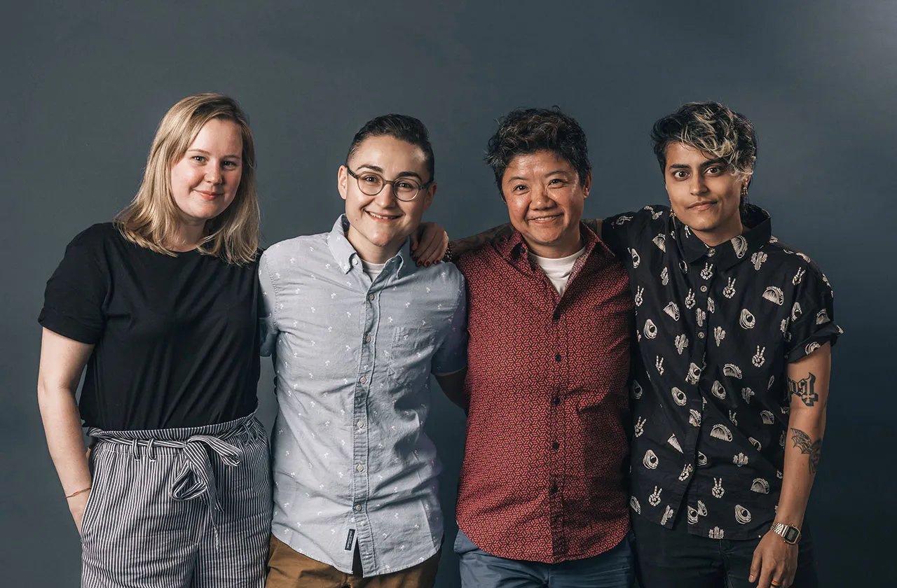

品牌價值觀
魚排旅遊網以專業、誠信、創新作為品牌核心價值。
我們的專家團隊擁有豐富的經驗，深入研究日本旅遊，定期實地考察，為遊客提供最準確、專業的旅遊資訊。
誠信是我們營運的基石，我們嚴格把關所有資訊，保證其真實可信，並隨時更新以反映最新情況，贏得遊客的信任與支持。
我們不斷追求創新，推出新的服務與科技，以滿足遊客多元化的需求，提升他們的旅遊體驗。

品牌使命
魚排旅遊網的品牌使命是“讓日本之旅更精彩”。
我們希望通過我們的努力，讓遊客能夠更輕鬆、更愉快地享受日本之旅。
我們致力於為遊客提供最全面、最準確的日本旅遊資訊，幫助遊客規劃和安排完美的日本之旅。
我們也希望通過我們的平台，讓更多的遊客愛上日本，感受日本文化的魅力。
品牌願景
我們致力於成為遊客在計劃日本旅遊時的首選平台。我們提供無與倫比的旅行體驗，深深植根於他們的心中，成為他們的信賴之源。
我們也希望成為中日文化交流的橋樑，促進不同文化間的相互理解和尊重。
我們將不斷努力提供優質服務，激發無限探索，傳遞文化體驗，並創造難忘回憶。

社會責任
我們深知旅遊業對環境和社區的影響，因此我們堅守社會責任，致力於可持續旅遊。
我們鼓勵遊客尊重當地文化和環境，在享受旅遊的同時也保護當地資源。
以確保日本旅遊業的可持續性發展，並為未來世代留下一個更美好的世界。